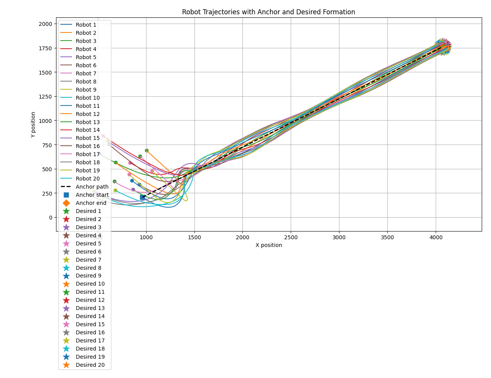

Current project / In progress
Reinforcement learning for scalable formation control
Ongoing research · Multi-robot simulation
Combining reinforcement learning with graph-based formation control. A Soft Actor-Critic policy adapts two shared controller gains, keeping the learned action space fixed as the robot team grows.
- Built a Transformer encoder with padding and masking to handle variable-size robot teams.
- Evaluated the structured controller in simulation with teams of up to 20 robots.
Current scope & next steps
Gain selection is centralized, and results use simplified robot dynamics in simulation. Next steps include multi-seed benchmarks, encoder ablations, decentralized gain selection, and fault-tolerance experiments.